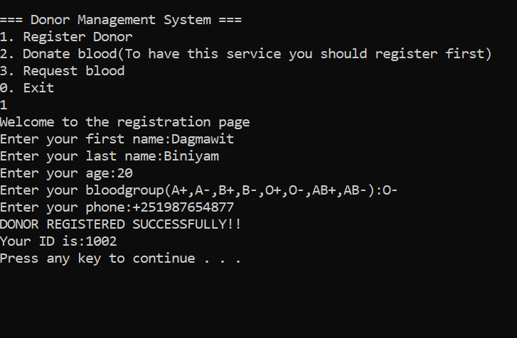

Blood bank Managment System

A system that accept, store and update donors information for the purpose of centeralizing the blood bank anagment system.
Watch the demo
How I built it
- Identified the information needed to manage blood donors.
- Designed the structure for storing donor information.
- Implemented features to accept and store donor details.
- Added functionality to update donor information.
Technologies I Used
- c++